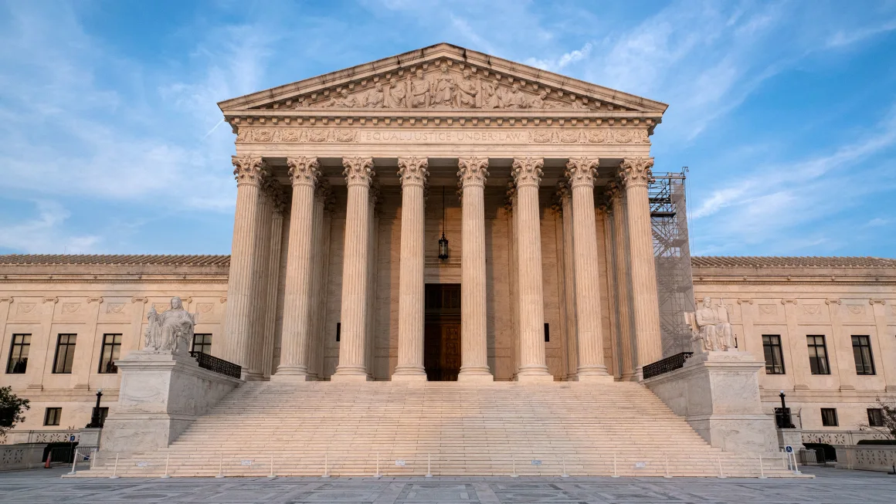

Supreme Court won't let Biden administration force Texas hospitals
to provide emergency abortion care
By Tierney Sneed, CNN
Updated 10:00 AM EDT, Mon October 7, 2024
CNN - The Supreme Court on Monday left in place a
court order blocking the Biden administration from enforcing in
Texas its policy of requiring hospitals to provide emergency
abortion care or risk losing federal funding.

The justices rejected a Justice Department request that they wipe
away the lower-court ruling and send the case back down for more
proceedings. That ruling had struck down guidance from the
Department of Health and Human Services asserting that, under
federal law, hospitals were obligated to offer abortion in medical
emergencies even in states that ban the procedure.
The move is setback for the Biden administration in its uphill
effort to assert some protections for abortion access since the
Supreme Court overturned Roe v. Wade in 2022.
Monday's maneuver also keeps abortion off the Supreme Court's docket
- for now - after two major abortion cases last term, including one
from Idaho raising very similar issues as the Texas dispute.
The high court's handling of both the Idaho and Texas cases leaves
unanswered questions about whether, under a law known as the
Emergency Medical Treatment and Labor Act, federally-funded
hospitals must offer abortions to emergency patients with pregnancy
complications putting their health at risk - even in states that ban
the procedure.
Texas, joined by other plaintiffs, successfully sued to halt Biden
administration guidance to hospitals asserting that EMTALA trumps
state abortion bans. A ruling blocking the administration from
enforcing the policy in the Lone Star State was upheld by the 5th US
Circuit Court of Appeals.
US Solicitor General Elizabeth Prelogar had asked the Supreme Court
to wipe away that ruling and instruct the lower courts to reconsider
the case with more recent legal developments in mind.
Last term, the
Supreme Court punted on a similar case arising out of
Idaho, where the Justice Department sued the state over its strict
abortion ban, alleging that the ban violated EMTALA for its lack of
exemptions for abortions when pregnancy complications imperil
woman's bodily functions but do not yet imperil her life.
The Supreme Court paused a lower court's order blocking the ban in
medical emergencies and took up the case before a full appeal played
out in lower courts, only to rule 5-4 this summer that the case had
been taken up prematurely, sending it back to lower courts.